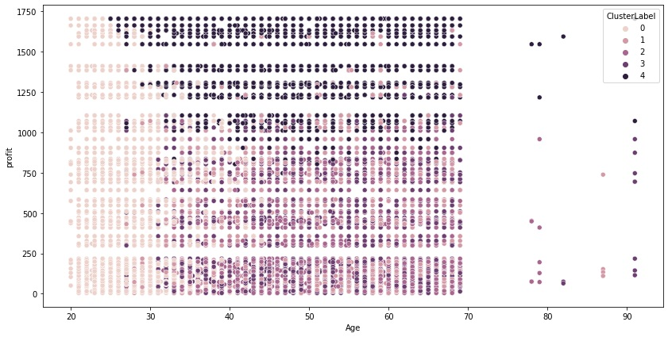
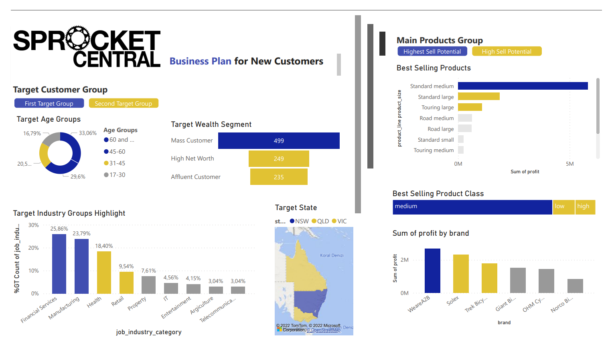

Customer Segmentation Analysis for Targeted Marketing
Data set clustering visualized.
Objective and Methodology
The project aims to enhance the Bicycle Company's marketing strategy by leveraging data-driven insights from customer trends and behaviors. Using advanced analytics on the client's existing datasets, the focus is to identify and recommend the most valuable 1000 new customers to target, with the intent of maximizing value for the organization.
I have proposed a systematic and analytic approach, encapsulating a progressive timeline, segmented into three distinct phases:
Datasets Utilized:
- Transactions Data
- Customer Demographic Information
- Customer Address Records
- New Customer List
Analytical Approach:
Data Exploration
This foundational phase involves a rigorous data quality assessment, including the management of missing data through robust imputation techniques. The exploratory data analysis (EDA) will utilize statistical and visual tools to uncover underlying patterns, detect anomalies, and test hypotheses within the customer demographics, transactional data, and addresses.

Model Development
A K-Means clustering algorithm is implemented to achieve precise customer segmentation. This is formulated on critical customer attributes such as past purchases, age, tenure, property valuation, and profit contribution, with the aim to discern distinct customer clusters.
Interpretation
The final interpretative phase will deeply analyze each customer cluster. Special attention is accorded to the most profitable segments to tailor strategic marketing initiatives. This comprehensive analysis is translated into actionable recommendations for customer acquisition, aimed at optimizing the client's marketing resources for the highest return on investment.
Key Findings:
- Age groups 31-45 and 45-60 emerged as the most profitable segments.
- The mass customer segment and the industries of manufacturing and financial services were identified as significant contributors to overall sales profitability.
- Standard product types dominated transaction volumes, whereas touring bikes yielded the highest average profit margin.
- Brand analysis revealed WeareA2B commanded superior total and average profits despite Solex's lead in sales volume.
Strategic Recommendations:
- Customer Acquisition: Prioritize the new customer cohort of middle-aged and older adults, adapting marketing strategies to resonate with their preferences.
- Customer Retention: Maintain engagement with low-frequency purchasers to capitalize on their substantial yet sporadic spending.
Segmentation Insights:
| ClusterLabel | Past 3 Years Bike Related Purchases | Age | Tenure | Property Valuation | Profit Sum | Profit Mean | Owns Car | Affluent Customer | High Net Worth | Mass Customer |
|---|---|---|---|---|---|---|---|---|---|---|
| Cluster 0 | 50.3 | 28.8 | 3.8 | 7.7 | $2,095,120.50 | $493.20 | 0.5 | 0.3 | 0.2 | 0.5 |
| Cluster 1 | 46.5 | 49.1 | 12.6 | 3 | $1,281,487.90 | $432.80 | 0.4 | 0.2 | 0.3 | 0.5 |
| Cluster 2 | 24.3 | 50.2 | 13.1 | 8.8 | $1,557,879.00 | $324.20 | 0.5 | 0.2 | 0.2 | 0.5 |
| Cluster 3 | 77.5 | 49.7 | 12.4 | 8.8 | $1,471,544.70 | $353.10 | 0.5 | 0.2 | 0.3 | 0.5 |
| Cluster 4 | 48.3 | 48 | 12.1 | 7.9 | $4,211,035.60 | $1,374.80 | 0.5 | 0.2 | 0.3 | 0.5 |
- Cluster 4: Identified as the most valuable segment due to their frequent purchases, higher property valuation, and profitability.
- Cluster 0: Young, affluent customers with significant spending power, suggesting potential for growth with targeted marketing campaigns.
- Cluster 2: Less frequent purchasers but with considerable profit contributions, necessitating tailored engagement strategies.
Conclusion:
The integration of customer data analytics and machine learning has culminated in actionable insights for the company, enabling data-driven decision-making for marketing resource allocation and customer engagement strategies. This project underscores the potential of predictive modeling and customer segmentation in optimizing marketing efforts and maximizing revenue.